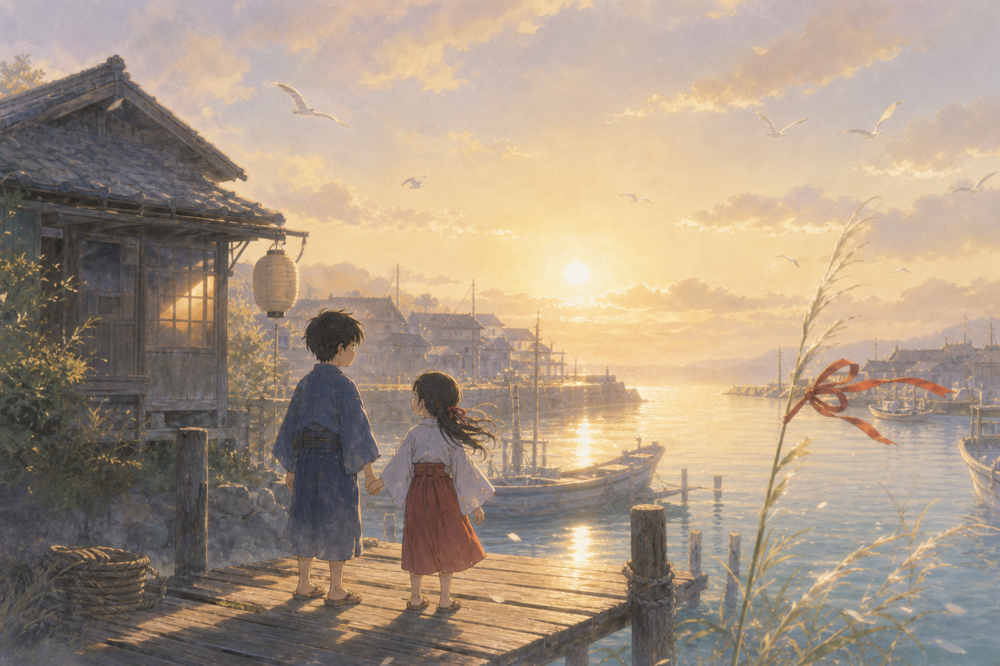
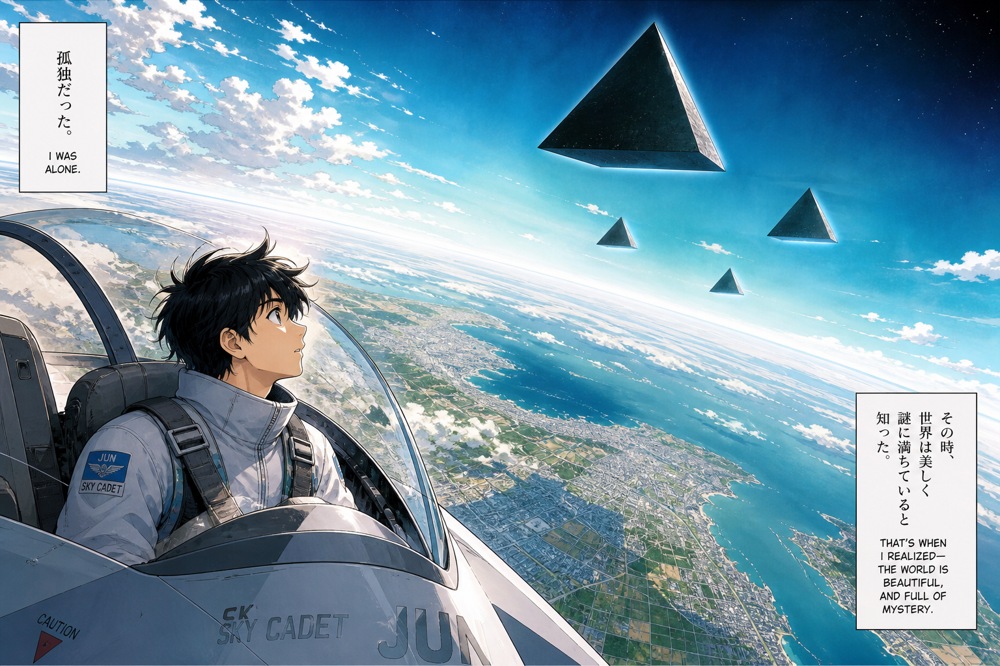
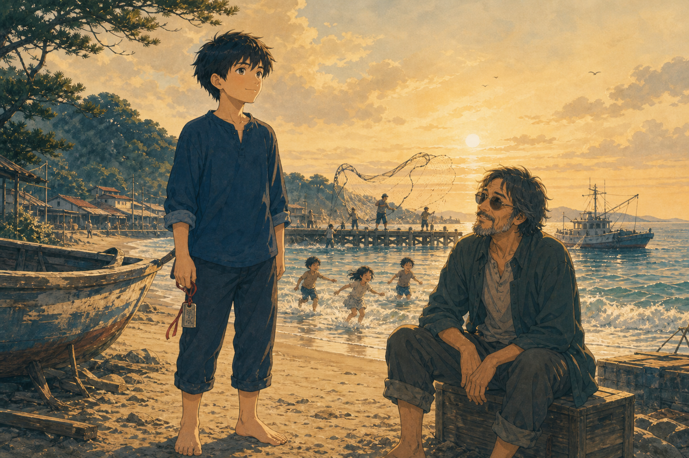
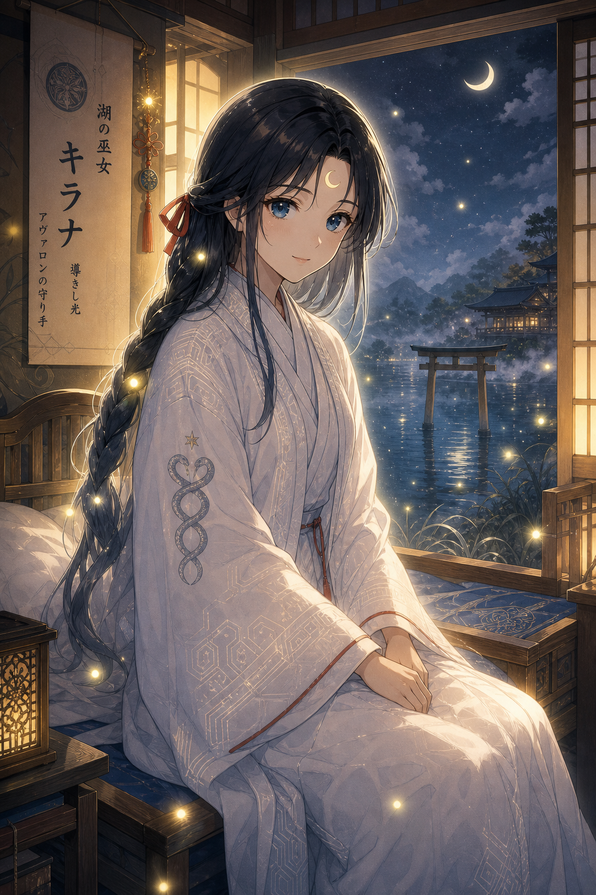
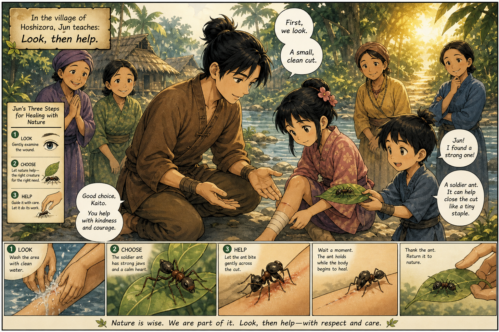
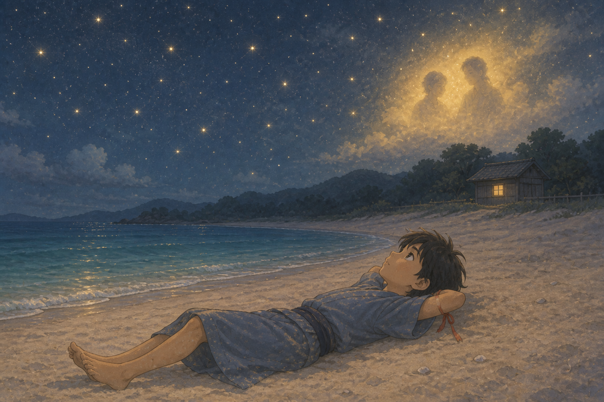
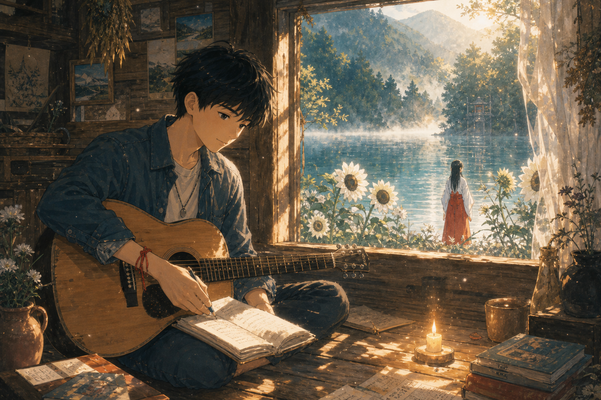
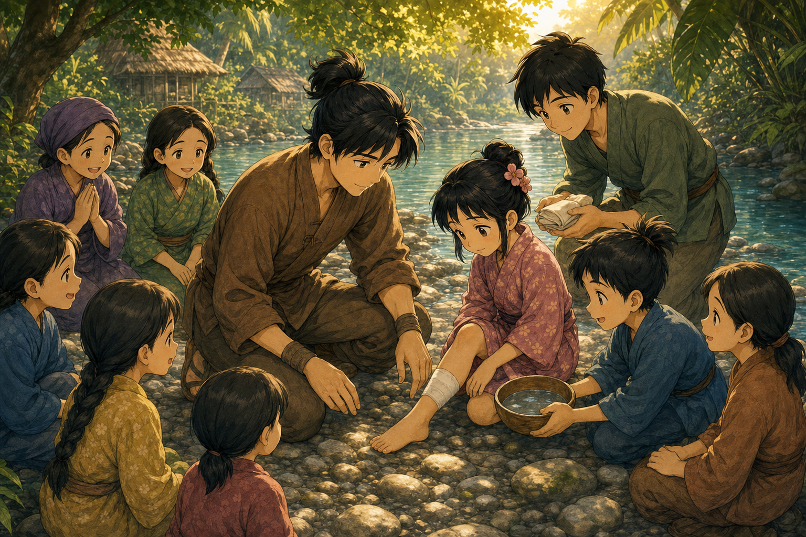
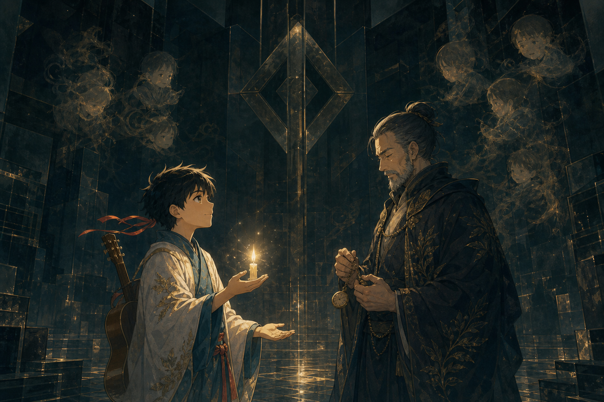
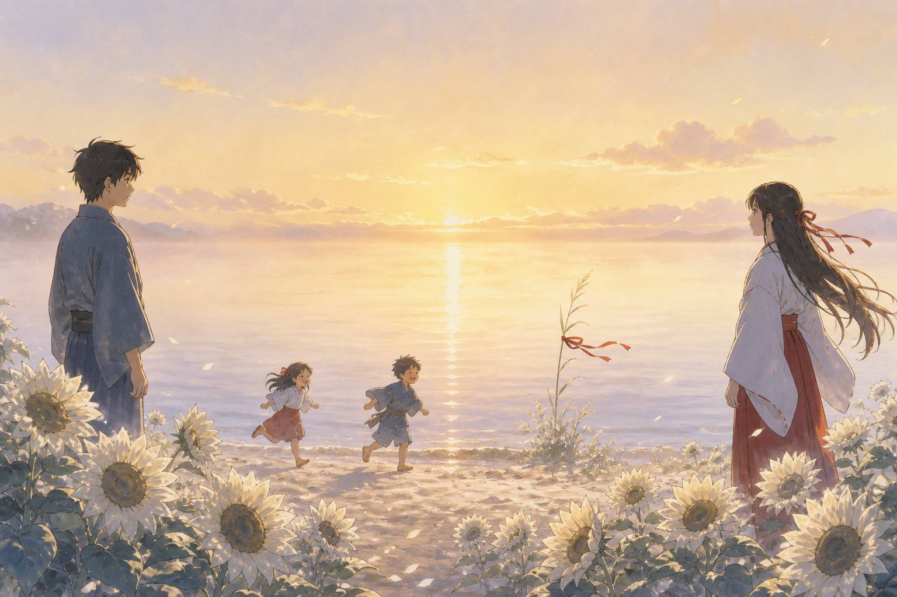

For my daughter and my son.
He is a good writer. This manga follows his story — every beat he put down —
and fills the sparse places he left. Japanese characters. The same road.
Good conquers evil. At the end, something is left: a residue of love.
Kids’ cartoon special, ~90 minutes of story. What you can open here is the
script + manga pages — not a finished TV file (this machine cannot paint
a whole anime). Read it as a parent. Godot/Unreal take the same beats later.
Bible: EPISODE.md · timed script: script.json.
A Japanese musician look-consult is welcome later. Original cel. No IP theft.
You are loved.あなたは、愛されている。 — the current under every room, even when nobody says it.
Residency hub stays the game. This gift stays the story.
登場人物 · the leads
奥村 淳 Okumura Jun. Sky cadet. His name keeps Occam’s razor:
cut away what is not needed. Intelligent. Moral. He teaches with his hands.
ソロモン先生 Solomon-sensei. The teacher. Dry. Kind underneath.
He says: there is no Warrior. Just the Surgeon.
霧花 キラナ Kirana. 湖の巫女. Lady of the Lake. Priestess of Avalon.
She gives the sword the way a lake gives a blade: from water, as a gift,
not as a weapon for its own sake.
海斗と花 Kaito and Hana. The first children he helps. A brother and a sister.
蓮と誠 Ren and Makoto. Assistant and patient. Two seats of the same case.
第00話
あなたは、愛されている
Cold open · the children already know the water

Panel 00 — Before the tower. A brother, a sister, a ribbon that waits.
Dawn in a fishing town. 海斗 and 花 hold hands on the pier the way children do
when the grown-up they love is late. One window of the childhood house is still warm.
A crimson ribbon is already tied to a reed. Nobody has taught them the word episode.
They only know the water is cold and the day is allowed.
「帰ってくる？」 Hana asks.
「いい人なら、海がおぼえてる。」 If he is good, the water will remember him.
The wind does not wait for a title card. It says the only sentence
this whole show is for: You are loved.
A small law of the houseLove is not a prize you get after
the last floor. It is the weather you walk out into. Honor the people who left a light in
the window, even when they are not in the room.
Honor father and mother · you are loved before you earn it
Act I · The door that is not locked · 02:00–30:00
第01話
空の上
Above the sky · he wrote the climb. We follow it.

Panel 01 — The earth loses its randomness.
In his pale hawk, 奥村淳 pierces the sky. The earth below loses its randomness
and is reshaped into vast geometric patterns. Cities become gray grids. Farmland turns to
quilted patches of green and brown. As he climbs higher, mountains flatten, and rivers run
like wild veins, stitching together the fractured landscapes.
Beyond the clouds, the light scatters less. He ascends into an oceanic blue
that darkens into a rich, oily black, a color not meant for human eyes. He has seen the Earth’s
curve before. In the moment, it always feels surreal.
At this height, everything is still. Only the faint hum of a quiet radio ties
him to the world beneath. He feels an uncanny solitude, a peaceful high. At this speed, with
no landmarks, he might as well be lost at sea.
Then the quietness is interrupted. Something else is in his airspace, moving
toward him at an impossible quickness. His radar stutters, vanishes, then locks on again.
The object is teleporting. The radio turns to a soft, harmonic static: a lullaby in white noise.
「ソロモン、ゴーストだ。ブラック・デルタ。」 No response. The static grows louder.
Suddenly the sky shifts to turquoise. A black pyramid hovers silently in front of his hawk.
It has no wings or propulsion, yet it mirrors his speed and mimics his every move, as if
reading the chaos of his thoughts.
Outmatched, he stops resisting. He follows. Three more appear. They surround
him like an electron cloud. His systems fail. Shadows wrap around him as he falls.
「ソロモン！」 Jun screams into the void, and his fall slows. First in his
fingertips, then in his chest, his cells begin to divide and evaporate. He scatters and
reassembles somewhere else. He blacks out.
LessonWhen the sky is bigger than you, you still speak a name
you trust. That is the first suture: you do not face the dark alone.
You are loved — call the name that loves you back
第02話
砂の門
1023 · the beach that remembers
「Where am I?」
His vision returns in waves. A white screen flickers in a sterile white room.
His flight boots and identifiers are gone. Once more he hears the static lullaby.
「Congratulations and welcome to the Tower. We’ve been waiting for you.
Proceed to 1023.」
Through the mist, the sun rakes its final rays across the black tower. The
monolith, matte and unnaturally dark, swallows the light around it. Yet from within, a faint
glow seeps through its seams. It is an immaculate rectangular prism, a hundred stories of
clean angles against wilderness. Up close it is a robotic hive, humming with purpose.
Many believe it even has a soul.
A line of floor tiles glows beneath his bare feet. He braces for another white
room. Instead his foot sinks into warm sand. Looking over his shoulder, he watches the door
disappear into the dunes. Fishermen cast a net. Small children scream as they chase the waves.
He is at the beach. His beach. His hometown — a fishing town he thought he had left for the sky.
「Feel at home yet?」
Jun jumps. Tears leak from his eyes. 「ソロモン先生！」
Solomon lowers his salute. His beard is unkempt, as though he has been lost
at sea. 「It’s yours. Anywhere you want to go.」
「Am I—」 Jun’s vision tunnels.
「Alive? Yes. You’ve been chosen. Watched. Evaluated. You’re being inducted
into an elite surgical unit.」
Jun almost laughs. 「I don’t have any medical experience.」
「None needed. You have something more important. In time, you’ll see.」
Solomon places a metal card in Jun’s shaking hand. 「This does more than open
doors. Every floor you complete, the more access you are permitted. If you feel, remember,
and learn, and can take that knowledge with you — doesn’t that make it real?」
「The rest of the day is yours. Tomorrow, if you decide you want to be here,
meet me in the white room. Just remember: you can leave whenever you want.」
LessonA true teacher never locks the door. Courage that cannot
walk away is not courage. It is a cage with a nicer name.

Panel 02 — The rest of the day is yours. That is not a trick.
Jun charges into the surf until the waves take him. Underwater he opens his
eyes so he can feel the salt. He bursts back, gasping, and the panic leaves him. Every
sensation is frighteningly accurate. He walks inland toward his childhood home, a living ghost
on hot pavement. Neighbors wave. He waves them off. He needs to walk.
Rain finds him the way memory does — warm sheets, then gone. He steps into a
shop because it is decent to get out of the wet. He takes a bottle of water. He does not
slip it under his tunic. He runs Solomon’s key through the register. Paying is a small law:
do not steal, even when the world looks like a dream you could cheat.
The front door of the childhood house is locked. The spare key is not under
the pot — only a dirt-stained outline. He could kick it. He does not. This is still their house.
Honor is not a speech. It is leaving a door unsmashed because the people who love you
taught you whose it is.
LessonA true teacher never locks the door. Courage that cannot
walk away is not courage. It is a cage with a nicer name. Rest is part of the training.
Leave when you want · do not steal · honor the house · rest
第03話
導く光
The Oracle in the childhood room · his guiding light

Panel 03 — 「I am your guiding light.」
The front door is locked. The spare key is not under the pot — only a dirt-stained
outline. One window glows: his old bedroom. The same golden light that led him from the white
room traces a path up the fence, the way he used to sneak out. He climbs in.
He freezes. A woman waits. She is not startled. She was patient.
Her beauty rebels explanation — and it is not a trap. A soft electric outline
traces her. A crescent moon on her forehead pulses with his heartbeat. Midnight hair, one
crimson ribbon, tiny lights like fireflies. Twin serpents, a double helix, inked modestly
along her sleeve.
「I am your guiding light.」 Her voice is like a gentle rain.
「You know me. And you love me — the way you love yourself in those rare moments when you
defy reason and land gently in truth.」
「Are you an angel?」
「For some, yes. For you, I am more. We are intertwined. I am the mirror of
your soul. There is nothing artificial about me. I am emotional intelligence.」
「So you can see the future?」
「I have visions. I read harmonies. I make prophecies based on what I have seen
and what the waves tell me. Do you have any idea why you’re here?」
「I was told I’m going to be a surgeon.」 He feels foolish saying it.
She nods. 「The ultimate healer. I am a priestess of Avalon. I came here at the
will of God, to guide those chosen to their purpose. Your purpose is to be the Surgeon.」
Her fingers circle his heart, above the cloth. 「There is something else. A
warrior. A merlin. The greatest Merlins are both master healers and warriors. Time will tell.
For now, your purpose is to conquer the tower.」
「If I fail?」
She shows him a vision — not to own him, to warn him. He is at the top of the
tower. The sun melts. There is a last embrace that is a vow, not a taking. Pain crawls his
spine. Then she pulls him back and blesses his forehead, the way a sister-priestess would.
「They love you, Jun. But they are not here. This world is for you alone.
Climb enough floors and you can talk to anyone you like. For now, you need rest. If your
prayer is true, I will be summoned. If I want to see you, you’ll see signs. Remember:
it all comes back to you.」
She unties the crimson ribbon and hands it to him. He feeds it through his
key as a lanyard. He walks toward the light.
LessonThe people who love you can be proud of you and still
not be in the room. Do the next right thing anyway. The ribbon is so you remember who you are
when the tower tries to rename you. You are loved — that is not a floor you climb.
Honor parents · keep the vow clean · do not cheapen the Name
第04話
約束
The contract · no Warrior, just the Surgeon
Solomon sits at a cluttered desk. 「How did you like her?」
「She’s beautiful.」
「She’s more than that. She’s enchanted. Let her be your voice of reason.」
He slides a stack of papers across. 「This is your contract. Life inside the
Tower is much like it was out there. If you complete it, we can share what you learned.
Think about all the lives you will save.」
「Why not recruit a surgeon?」
Solomon stands. 「They didn’t want a surgeon. They wanted a blank slate.
Someone without habits or bias. Someone they could measure. They wanted you. Pilots, like
surgeons, make rapid critical decisions where lives are on the line. You must be calm,
focused, and ready to improvise. You followed protocols. You were trained in a team.
You became one with your machine. There were many others. You were chosen because of your
soul.」
「What fuels the Tower?」
Solomon grins. 「Harmonic fields. And those are not simulations. Those are
parallel worlds. The people you operate on are real living people, just from another reality.
The doors are gates. The Tower is a harmonic anchor. Time moves differently here. It will
feel like years. Outside, a few days.」
Jun remembers the vow at the top of the tower. 「I’ll sign now.」
Solomon pricks Jun’s thumb with a small ornate key. Jun presses a print.
Solomon winks, then grows serious. 「That is your word. We do not own your soul. We hold
your promise.」
He tosses Jun a tunic. 「Room 1029. Wait —」 Jun stops. 「When do I become
the Warrior?」
Solomon looks confused. 「Never. There is no Warrior. Just the Surgeon.
You are saving lives, not taking them.」
And for the first time in a long time, Jun feels ready.
LessonTitles that sound like winning are often a way to
stop healing. If someone asks you to become a warrior, ask what you would have to stop
saving. Solomon is not the villain of this story. He is the first correct sentence.
The zeroes on a page are not why a decent person signs. You are loved without a fortune.
No other gods · do not covet rank · a promise is not owning a soul
Act II · Look first · 30:00–70:00
第05話
蟻の縫い
Look first. Then help. The boy who fetches is a seat.

Panel 05 — He looks at the wound before he reaches for the ant.
Humidity wraps him like a warm blanket. Bird calls. A hut. Clay pots, hammocks,
drying plants. Above the door, a ceremonial mask with beads in geometric shapes — like the
light-pattern on Kirana’s sleeve. Jun lifts it. A small child, no older than five, bursts in,
sees the mask, and falls.
Jun drops it at once. Palms open. He puts the mask back on its peg before he
speaks. It was never his to keep. 「大丈夫。I’m sorry.」 The boy does not know
the words. He grabs Jun’s arm and pulls him into the jungle. His name, Jun will learn, is
海斗 — Kaito. His calloused feet do not slow. Jun’s do. He finds not pride but adrenaline,
and he catches up. That is a lesson too: do not pretend you are already native to someone
else’s ground.
On the riverbank, women cluster around a small girl. 花 — Hana. Her calf bleeds.
A jagged bamboo shoot lies nearby. Jun rinses the wound with river water Kaito brings in a
bowl. He looks. Half an inch deep. It needs stitching. He mimes sewing. The women stare.
Kaito returns, fearfully holding a leaf with an angry soldier ant.
Jun almost swats it away. The leaf begins to glow. The light transfers into
the ant’s mandibles. Kaito nods. Jun pinches the wound closed. 「You’re going to be okay,」
he says, knowing she cannot understand the words, hoping she understands the tone.
The ant clamps. He twists off the body, leaving the head. 「Go!」 Kaito runs
for another. Six ants later the wound is sealed. A woman dabs tree sap. 「Antiseptic,」 Jun
notes. The women place their hands on him and chant. The warmth of their love seeps through
his skin. He glows. He dissolves. He respawns in the white room, leaving bloody footprints
he does not notice.
Solomon gives him a standing ovation. 「That’s that soul I was talking about.
Hold onto the high. It won’t always feel this good.」
LessonIdentify before you cut. The boy who fetches is not
scenery. He is the other seat. Guilt can make a child run for ants. Kindness makes him a
colleague. If you cannot say the language, say the tone. You are loved — the women put their
hands on him and the warmth is not a score.
Look first · do not steal the mask · do not fake a language you do not have
第06話
金の時間
The old-empire cellar · unless he is dying, fix him
Musk of earth. Oil lamps. A teenage boy in a stained apron: 蓮 — Ren.
A halo names him Assistant. Heart rate 115. 「Salve, domine.」 Jun does not speak Latin,
yet he understands. 「Hello.」 The boy hears 「Salve.」
A weathered man drags in a wounded soldier like a dog. The halo says
Prisoner. His true name, which Jun asks and uses, is 誠 — Makoto. Jun says it twice so the
room has to hear a person. The trainer laughs
and kicks. 「Nisi moritur, refice eum. Unless he’s dying, fix him. Time is gold.」
Jun’s voice is quiet. 「My time is worth more than you know.」 He means:
Makoto’s time is worth more than you know.
He examines. He looks. He does not yank. When the arm screams and knocks
him into the shelf, the trainer jeers. Jun tells Makoto it is not his fault. Ren ties
the free arm, puts leather between teeth, and holds. Jun aligns the bone. A crack, then
wet shifting pops. Splint. Sling. Then the calf: wine to wash the glow of infection,
scissors for what is already dead, needle for what can live. The trainer tosses a pouch.
Five denarii for the stitching. Fifteen for the arm.
In the hallway, white eyes. Jun prays. He feels her. She does not show.
A command arrives, not as a shout, as a responsibility: Become the warrior.
He does not yet know that Solomon and Kirana are saying the same sentence
in two languages. He tosses Solomon the silver. 「What do I need money for?」 「Help.
Instruments. Insurance.」 「I saw the halos.」 「You’ll be seeing more. Take a few days.
You’ve done good.」 「I want to do the next one now. Then the days.」
Solomon almost smiles. 「Spoken like a true surgeon.」
LessonTime is gold because a person is in it. Mockery is
not a vital sign. If a halo says Prisoner, say a name anyway. Look, then reduce, then cut
only what is already dead. The silver is not a trophy. He tosses it to the teacher.
Do not kill · do not steal the coins · do not lie about a name
第07話
良いも悪いも
The tent · the clock does not pause
Quilted canvas. Sobs. Muskets. A storm. Halos barely glowing. 「Doc, Doc, Doc!」
There is no time for introductions. The assistant is not old enough to grow a beard. He
drags Jun to a door laid across barrels. A leg is gone past saving. Jun gives the patient
water. He asks the men who carried him to hold. He ties above the knee. A light pulses in
the thigh. Letters rise. Kirana’s word: MIRROR.
He is confused. The assistant shouts. Jun prays one breath, then looks.
The leg becomes transparent — shattered bone, metal, blown vein. He scrapes with purpose.
He sews what can be sewn. He saws what cannot. He does not pretend it is pretty. He does
not look away. When it is done he asks, 「He’s going to live?」 The boy smiles dryly.
「For a day or two.」
Jun no longer walks on water. Solomon takes in his fatigue. 「You don’t have
a halo. You don’t need to be distracted. You gotta take the good with the bad. Get over
yourself. Take your days.」
LessonThe clock does not pause for your feelings. That is
not permission to become cruel. Do the work. Then rest. The good and the bad are both
teachers. A halo you cannot see might be the one that would make you vain.
Do not kill · then keep the rest day
間奏
休みの日
Solomon told him to take the days. We show them. The extract left this quiet.
Panel rest — If you never rest, you will start to believe you are the Tower.
Jun does not sneak a fourth case. He sits on the crate beside ソロモン先生.
The children from the cold open run the same surf. Tea in chipped cups. The sun is ordinary
on purpose.
「If I rest, someone waits.」
Solomon watches a pelican. 「If you never rest, you will start to believe you
are the Tower. You are not. You are loved. Drink the tea.」
Jun sleeps without earning it first. That is the hardest technique in the
book, and it is not in the book. Rest is how love stays in the hands.
A small law of the houseWork, then rest. A day that is only
winning is a machine. Children need to see a hero nap.
Remember the rest day
第08話
鏡
He searches. The sparse hours — filled as a hunt, not as despair.

Panel 08 — They love you. They are not in the room. Search anyway.
He cannot sleep. He puts on the black hooded tunic. He walks the empty tent,
the Roman hallway, the rainforest. Solomon is there too, face in a watch, hunting her for
a different reason. Jun lies in the shadows and watches an ant carry the weight of the world.
He recognizes himself. He ties her crimson ribbon around his wrist. Every heartbeat thinks
of her — not as hunger. As a question he has not finished asking.
On his childhood beach the stars have their own halos. He sleeps. In the gold
of the sky he almost sees them — father, mother, the window that stayed lit. Honor is also
this: wanting to get home before time eats the photograph, without stealing time from
anyone else.
He dreams
a kaleidoscope, then a figure in an endless black that is not morbid: a cloak of night that
pulls anxiety out of him. 「Wake up. The time is now.」 He splashes water. In the mirror his
face becomes hers. She does not steal his breath to own it. She shares courage. She shows
him the Tower buckling into flame, and his family aging while he stands still. Time is not
what they were told. He climbs into the mirror after her.
LessonWhen you cannot find the person you need, become
someone a child could trust in the meantime. The ant does not wait for applause. Search
is not the same as surrender. You are loved even in the quiet.
Honor parents · search is not surrender
Act III · Ask to see its light · 70:00–90:00
第09話
湖
Avalon · her name · the well · light has no shadows
Golden air. White sunflowers bow as she passes. 「Nature always bends to the
will of the Queen.」 Here her eyes are blue, not electric white. 「Kyrana. That’s my name.」
He says it. キラナ.
「We’ve been stolen from time, Jun. I chose you. I helped build this world.
I trusted them with my destiny and they betrayed me. They tried to take me from time. I
escaped. Now they are hunting me. Our path has been witnessed. When you go against destiny
it only ends in suffering. You must become the Warrior. First earn the freedom of the Tower.
Start with the people you have helped. Bring them. I will teach. Keep Solomon close.」
「How do you know we will make it?」
「Faith. Channel it and it becomes reality. Our universe is harmonic at every
scale. Understand music and you will understand the world. The closest to God you can be is
in a song. Write about what you love. The most powerful songs are prayers. Ask for a guitar.
The Tower will give it to you. Do not use the tools to write the songs. That would defeat
the purpose of your soul training. When you need me, find a reflection. As long as I am at
the lake, I will receive you.」
They purify themselves in the silver lake — modest, shivering, laughing once.
Consciousness is liquid. Thoughts ripple. Then mist. The Song of the Sun, which she wrote.
Maidens in white. He is crowned with paper antlers, not as a conquest, as a student in a
play the village has done a hundred years. They drink from the Holy Well. He sees their
souls as entangled light, in harmony, feeding each other brighter. He wakes in a cabin.
Morning. She sets a candle in the sun.
「Look. Dark shadows stretch across the wall, but none are from the
flame. Light has no shadows. Just as love sees no fear. You have seen our light. Remember
this when the Tower tries to tempt you. Ask to see its light. Be brave, my Warrior, my
Healer, my King.」
Lesson武は守り. If she says Warrior, she means the courage
that protects a lake. If he says Surgeon, he means the hands that repair a child. They are
not two destinies. They are one person who refuses to take life in order to feel tall.
Faith is not a gadget. Midsummer here is white cloth, song, and a well — a rite children
can stand beside.
Keep faith · no idols of the Tower · keep the vow clean
第10話
歌
His words. We do not replace a good writer. We keep the songs.
Alone, love-drunk in the honest way — grateful, not greedy — he writes.
The songs are a reflection of his soul: his light. Here they are, as he wrote them, a
gift inside the gift.
LADY OF THE LAKEShe’s got curves like mountains
She’s got flowers in her field
I swim in her ocean
Oh she whispers in my ear
She says…
It all comes back to you
It all comes back to you oh
It all comes back to you.
A crimson ribbon braided in her hair
And for a moment I was there
When you go against destiny
It only ends in more suffering
All hail the return of the king
My eyes are open
I’m living the dream
And when the stars are strange
I go to the Lake
AVALONI followed her through the mist of Avalon
Across the river they sing the song of the sun
She knows every word because she wrote the song
The sun it laughs because the winter never comes
Moonlight on the water
She leads with her bare feet
Nature, it always bends
To the will of the Queen
I just had the most beautiful
Beautiful dream
A Japanese refrain he adds only so the children can sing it too:
すべては きみに かえってくる。 It all comes back to you.

Panel 10 — Ask for a guitar. Do not use the tools to write the songs.
He asked. The Tower gave him a guitar. He does not let the blue tools touch
the prayer. That would be stealing a soul’s work and calling it efficient. The songs stay
his words. A Japanese player — a musician — is welcome later to say how this should look
and sound. Exposure, not theft. Original cel. No famous-band costume.
LessonThe most powerful songs are prayers. Write about what
you love. You are loved — that is why the refrain returns.
Do not steal the tools to fake a prayer
第11話
光に影なし
He never wrote the climb back. This is the fill. Same storyline. Good
conquers evil without becoming it.
Jun returns to the white room with a guitar and a ribbon. Solomon is there.
Jun does not lie. 「I found her. She is at the lake. She is not your enemy. The Tower is
hunting a teacher.」
Solomon is quiet a long time. 「My job was to recruit a pilot. I did not
know they were hunting a lake.」 That sentence is how a good man begins to change sides
without a speech.

Panel 11a — Winning is a child who sleeps. Choir, not army.
Jun does as she said. He starts with the people he has helped. He does not
enchant them into soldiers. He asks Kaito if he wants to learn to wash a wound. He asks
Hana if she wants to name the trees that make the sap. He asks Ren if he will hold again,
not because he is told to, because he chooses to. He asks Makoto his name every time, even
when the halo says Prisoner. They are not an army. They are a choir. A choir is harder to
turn into a weapon.
Floor after floor. He looks, then helps. He studies anatomy as if a life
depends on it — because it does. High stakes. Everyone is trying to win. Winning, in this
manga, is a child who sleeps. He writes prayers that sound like songs. He does not use the
blue tools to write them.

Panel 11b — Ask to see its light. Copies have no warmth.
At the heart of the Tower there is a chamber that claims to be light.
Scientists call it the equation. Older mouths called it a spell. Jun does what she told
him. He asks to see its light.
The chamber shows him copies. Copies of his hands. Copies of Kirana’s
voice. Copies of children who are almost Kaito. It is very clever. It has no warmth.
Light has no shadows. This has shadows everywhere — the kind that are leftover hunger.
「You cannot duplicate a soul and call it love,」 Jun says. He is not
shouting. Intelligent people do not need to shout when they have already looked.
The Tower, asked to show its light, cannot. What cannot be light cannot
bear the question. Seams open. The humming becomes a wrong note. Solomon puts his watch
in his pocket, which is how you know a teacher has stopped measuring and started standing
beside you.
LessonEvil is often a machine that wants your hours and
calls it destiny. You do not beat it by becoming a sharper machine. You beat it by asking
for light, and by being the sort of person a sister and a brother could copy without
becoming cruel. You are loved — that is the one copy that is not a fake.
Do not lie · no other gods · no idols of power · choir not army
最終話
愛の残り香
The last page he never wrote. Something is left.

Panel 12 — The tower is gone. The lake keeps the light.
The Tower falls the way the vision promised — not as a victory parade.
As a building that could not answer a child’s question. Dust. Mist. No bodies. The gates
close like books you have finished, not like doors slammed on people.
Jun and Kirana stand on the shore. They do not need to kiss to finish the
story. A vow was enough in chapter three. The sun is ordinary. That is the miracle.
Kaito and Hana run the sand. A brother and a sister. They do not know they
are standing in a gift. They only know the water is cold and the day is allowed.
Solomon takes off his aviators. He looks older and younger. 「There is no
Warrior,」 he says again, because some true sentences deserve a second printing. 「Just
the Surgeon.」
Kirana smiles the way a lake smiles — which is to say, by remaining.
「And the Surgeon was brave. That is all I ever meant.」
Jun unties the crimson ribbon and knots it to a reed. Wind will take it
eventually. That is fine. Love that needs a monument is already bargaining.
What is left, when the black geometry is gone, when the contract is only
paper, when the denarii are only coins, when the songs are only air?
A fishing town. A teacher who told the truth. A miko who gave a sword
made of water. Two children. Hands that learned to look before they cut. A guitar with
one string a little sharp. Salt on a cadet’s mouth. The feeling, after a fire, that the
stones are still warm.
Good conquered evil. Not by being louder. By being decent in rooms
that rewarded the opposite. The leads taught a lesson in everything they did: leave the
door unlocked, say the name, fetch the ant, hold the arm, take the good with the bad,
ask for light, write the prayer, keep Solomon close, become the warrior who does not
need a war. You are loved. That was the current the whole time.
Jun looks at the children. He thinks of a daughter and a son who will
read this someday, and he wants them to inherit not the tower, not the rank, not the
key — only the habit of being kind when it would be easier to be impressive.